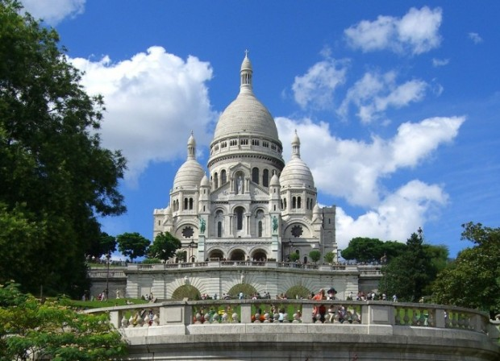

10 интересных фактов о Париже



- Город Париж был основан уже более 2000 лет назад, и сегодня является одним из самых посещаемых городов мира – за год сюда приезжают более 25 миллионов туристов.
- В Париже, в отличие от многих европейских столиц, из водопроводных кранов течет питьевая вода. Превосходная система очистки воды – предмет гордости горожан, в столице Франции даже работает оригинальный Музей сточных каналов.
- Популярный в том числе и у нас «французский багет» - длинный и узкий батон - изобретение действительно французское. Очень часто можно встретить парижан, спешащих домой с багетом под мышкой.
- Самый старый из сохранившихся мостов через Сену был сооружен в Париже еще в 16 веке. Интересно, что эта конструкция называется просто «Новый мост», так как во времена его постройки из-за отсутствия подходящего имени было логичным название «Новый». К тому времени в Париже уже существовало 4 моста, но до нашего времени они не сохранились.
- Знаменитый парижский музей Лувр был построен в 1793 году, и сегодня по факту является самым посещаемым музеем в мире – он принимает более 5 миллионов человек ежегодно.
- Впервые в мире стриптиз был исполнен на сцене знаменитого кабаре Мулен Руж в Париже в 1983 году. Девушка по имени Мона во время постановочного конкурса красоты полностью сбросила с себя одежду, и в итоге была наказана штрафом в 100 франков за непристойное поведение.
- Первый в мире маршрут общественного транспорта появился именно в Париже – это случилось 18 марта 1662 года по инициативе Блеза Паскаля.
- Парижское метро является шестым в мире по количеству перевозимых пассажиров. Это одна из старейших в Европе систем метрополитена, она уступает только Лондону, Будапешту и Глазго.
- Жители столицы Франции обожают собак, и поэтому с этими домашними питомцами разрешено появляться во многих общественных местах, в том числе и в некоторых ресторанах.
- Точкой отсчета для всех дорожных расстояний во Франции служит нулевой километр, расположенный в Париже на острове Сите, на площади перед собором Парижской Богоматери.